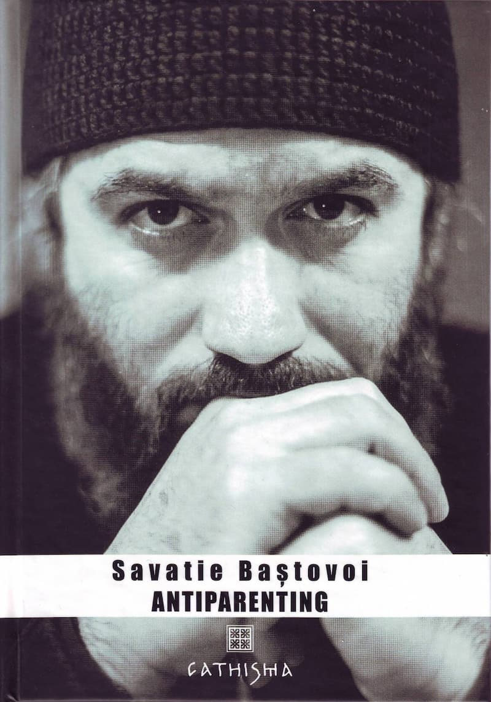

„Fiți copii la răutate, nu și la minte”
Antiparenting este titlul unei cărți recente de antropologie, filosofie, psihologie și educație (apărută în 2017, editura Cathisma, București), cu toată gama de științe subordonate lor, și toate acestea într-un limbaj curat, fără acrobații textuale. Învățătura creștină încununează cunoașterea dobândită în celelalte discipline, dându-le adevăratul rost. Se vede clar că autorul are tot interesul de a restabili adevărul și firescul în ceea ce – până acum un veac, să spunem – era de neconceput că va deveni obiect de dispută: nevoia de acreditare pentru a primi calitatea de părinte (pentru copii); altfel, dacă îndrăznești să fii părinte neoficial, nu e în regulă, acționezi subteran. Mai trist este că pentru maeștrii (guru) în parenting aceasta nici măcar nu trebuie să facă obiectul discuției. Pentru ei există doar certitudinea că omenirea s-a luminat abia începând de acum două, trei decenii, iar până în prezent a trăit în bezna nebuniei de a-și crește copiii fără să facă școală în acest sens. O mai mare infantilizare a omului cu greu ar mai putea fi inventată. Dar să nu-mi fie luate vorbele drept provocare!
Perioada comunistă a instaurat o modă nouă – aceea a ratării generaționale, modă în care ideologiile de azi excelează. Pentru comuniști, adulții educați în perioada anterioară își rataseră adevărata menire umană, pentru că moșteneau elemente burgheze. După anii ’90, cei educați în spațiul sovietic au primit la rândul lor eticheta ratării, fiind moștenitori ai ideologiei materialiste. În fine, macroideologia globalizării (matrice pentru numeroase ideologii), acest nou „iluminism” întunecat, deja nu mai dă vina pe marile ideologii politice și afirmă răspicat faptul că „tinerii de azi (…) nu pot fi nici măcar părinți. Atât de ratați sunt? Cel puțin așa reiese din miile de cărți menite să le explice cum să se poarte cu copiii lor” (p. 15).
Cu alte cuvinte, până acum s-a trăit la nivel subuman din moment ce n-au existat „parentologii” care să spună mamelor și taților cum să fie ceea ce ei doar credeau că sunt – părinți.
Datorită armoniei dintre logică, intuiție și realitatea vie, pe de o parte, și simțul ascuțit pentru utilizarea limbii române, pe de altă parte, cunoscutul ieromonah Savatie Baștovoi dă și prin această carte o lecție de gândire sănătoasă, demascând șubrezenia premiselor din care este țesută corectitudinea politică. Prin structura atent construită a cărții, el pare (din păcate, e nevoit să facă asta) că își ia de mână cititorul, și, ca un pedagog răbdător sau ca un Descartes al zilelor noastre, îi spune: bine, să presupunem că noi doi nu știm nimic sigur deocamdată pe tema asta – a fi bun părinte. Însă, din moment ce noi nu suntem primii oameni creați și, așa imperfectă cum a rămas omenirea după cădere, a continuat să existe totuși până acum, transmițând tot ce era necesar supraviețuirii fizice și spirituale a omului, să vedem ce idei au fost considerate dintotdeauna valabile, firești, așa cum e firesc să pui boii în fața carului și nu invers. În plus, atunci când se vorbește așa pasional despre „meseria de a fi părinte”, adulții inițiatori și susținători ai fenomenului parenting fac tot felul de presupuneri despre nevoile copiilor. Ori, dacă este sincer, orice om își poate aminti ce nevoi, dorințe și temeri avea în copilărie. În curând vor apărea manuale cu pretenția de a te învăța că după ce inspiri e indicat să și expiri. Sau au apărut deja?!
De-aici încolo, pe tema raportului dintre părinți și copii este construit un demers în care, așa cum mărturisește autorul în prima pagină a cărții, își ia însoțitori foarte mulți „specialiști în educație, medicină, psihologie, filosofie, arte sau pur și simplu buni părinți și copii, membri ai grupului Antiparenting, căci datorită sincerității și experienței lor am putut recupera mulți ani de studiu și lecturi necesari pentru o lucrare atât de amplă și ambițioasă cum este Antiparenting”.
A rezuma ideile cărții nu cred că ar face un mare serviciu acesteia, pentru că ar da cititorilor falsa impresie că au aflat tot ce trebuia și că s-au lămurit cum stau lucrurile cu încă o carte. Ca în binecunoscuta replică: am văzut filmul, la ce-mi mai trebuie cartea? Ar fi însă păcat să le scape tinerilor (în special) bogăția ideilor din Antiparenting. Și nu o spun în sensul că nu se poate să ratați o carte așa frumoasă, ca și când m-aș referi la un bestseller picat pe piața noastră de carte. Nu despre asta e vorba (deși cartea are tot ce-i trebuie să ajungă un bestseller educativ cu acoperire în calitate), ci despre o frumusețe în sens deplin, una care nu e separată de adevăr și bine și care ne privește pe toți, așa cum puține cărți celebre de astăzi o fac. Este o călătorie a gândului care nu iubește – cum e moda – jumătățile de măsură și amestecul adevărului cu minciuna. Și totodată este o călătorie a cuvântului limpede (cum, de altfel, ne-a obișnuit Savatie Baștovoi), când mass-media și aproape toate canalele de „comunicare” ne droghează cu termeni clarobscuri.
Iată un bun prilej să iei parte, ca cititor, la un proces de trecere prin sita lucidității a sloganurilor pe care le auzi neîncetat, printre care și sofismele literaturii parenting, o nouă sectă, dacă ne luăm după datele ce însoțesc fenomenul. În strânsă legătură cu parentingul se află numeroase „picături chinezești” a căror țintă suntem ceas de ceas: confuzia dintre afecțiune și iubire, mitul iubirii necondiționate (de unde și „parenting necondiționat”, o anti-Biblie aplicată) versus „găselnița iubirii «condiționate», un termen menit să diabolizeze tot ce este regulă, normă, disciplină, ajungând să atace chiar relațiile ontologice dintre părinte și copil, propunând o răsturnare a lor” (p. 26), spiritualitatea de tip Mindfulness, religia omului-internet, dicționarul de termeni inițiatici pe care îl aduce parentingul necondiționat – tantrum, meditație, tehnici de relaxare, de respirație, de control, energii, canale, pozitiv, negativ etc.
În încheiere las cuvântul autorului, redând doar două fragmente dintre cele câteva zeci pe care le-aș fi citat.
„Irascibilitatea, agresivitatea manifestată în fața străinilor, refuzul comunicării sau comunicarea deficientă sunt prezentate ca stări-normă pentu copilul modern, pe care părinții trebuie nu doar să le tolereze, ci chiar să evite orice încercare de a le tămădui. Copilul cuminte, ascultător, receptiv la cererile părinților este suspectat de timorare, de inhibare, de abuz. Copilul bun este un rău cu care trebuie luptat” (p. 34)
„Una dintre nevoile copilului pe seama căreia se fac adevărate tratate de parentologie este nevoia de a fi Independent.
Independența… Ce bine sună! Dar v-ați dorit vreodată în copilărie să fiți independent? V-ați dorit să nu aveți nici mamă, nici tată, să fiți așa, independent? Nu neg faptul că, în urma îndoctrinării duse la toate nivelurile, există de acum copii care la vârsta de 4-5 ani manifestă dorința de a scăpa de părinți, dorindu-le moartea, dar asta e o anomalie. Pentru un adult care înghite zilnic știri despre abuzurile asupra femeilor din Iran sau Siria, despre revoltele înăbușite în sânge din Ucraina și altele, independența este o valoare democratică. Dar credeți că e bine să luăm concepte politice ale oamenilor mari și să le aplicăm pe copii, cu convingerea că asta îi face fericiți?” (p. 64)
